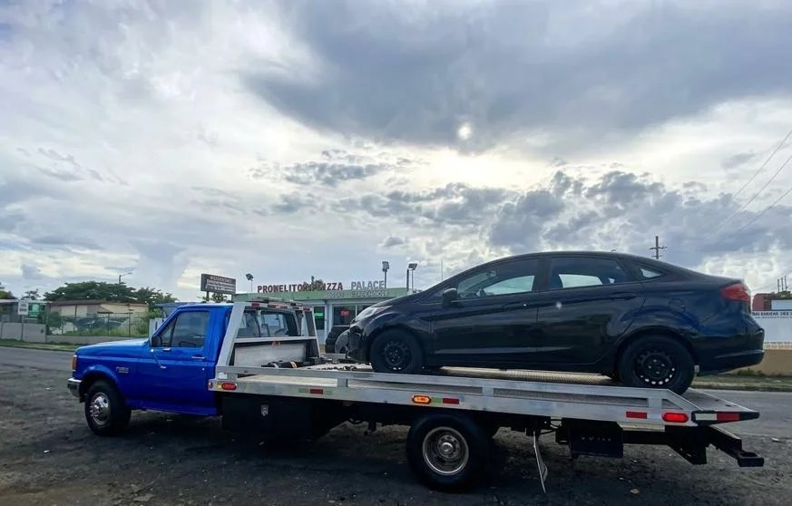
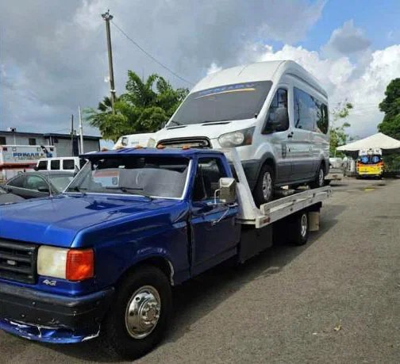
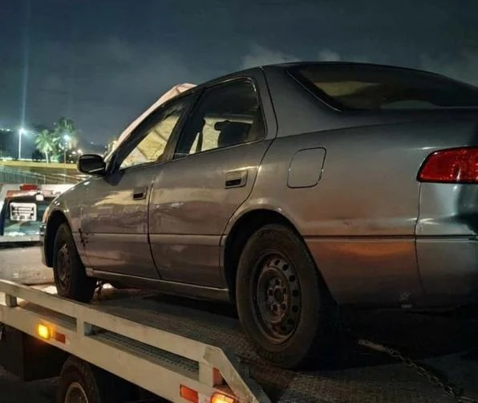

Grúa de plataforma propia, siempre abierta, en Toa Alta y el área metropolitana. Una llamada basta: llegamos donde estés y movemos tu vehículo con seguridad, eficiencia y profesionalismo.
Un solo número para cualquier emergencia en la carretera. Remolque y transporte de vehículos con seguridad, eficiencia y profesionalismo, en Toa Alta y el área metropolitana, las 24 horas.

Grúa de plataforma propiaServicio de grúa las 24 horas, todos los días, en grúa de plataforma. Tu vehículo viaja seguro, amarrado como se debe, hasta donde tiene que llegar.
Pedir este servicio →
Transporte seguroTransporte de vehículos a cualquier destino. Llevamos tu auto, SUV o van a donde lo necesites, con el cuidado que tu vehículo merece.
Pedir este servicio →
De día y de nocheSi tuviste un accidente o tu vehículo se averió en la carretera, llegamos a asistirte. Respondemos con rapidez para que no te quedes esperando.
Pedir este servicio →Grúas despachadas en minutos. Cuando llamas, salimos a buscarte lo antes posible — de día o de noche, porque una emergencia no espera.
Pedir este servicio →Tres pasos y tu carro ya va camino a donde tiene que llegar.
Al 787-679-1481, por llamada o WhatsApp. Siempre abierto, a cualquier hora.
Pueblo, referencia cercana y tipo de vehículo. Con eso salimos a buscarte lo antes posible.
Remolcamos tu vehículo con cuidado en nuestra grúa de plataforma y lo llevamos a su destino.
Fotos reales de Quinluz Towing en servicio, en las calles de Puerto Rico. Desliza para verlas todas y toca una foto para ampliarla.
← Desliza para ver las 3 fotos reales de nuestro trabajo →
Nuestra base está en Toa Alta y servimos toda el área metropolitana. Llena el formulario y tu mensaje llega directo a nuestro WhatsApp. Respondemos 24/7.
No importa si es de día o de madrugada — si te quedas a pie, una llamada basta.
Lo que más nos preguntan los clientes cuando se quedan a pie.
Sí. Estamos abiertos las 24 horas, todos los días. Llámanos o escríbenos por WhatsApp al 787-679-1481 a cualquier hora, de día o de madrugada.
Nuestra base está en Toa Alta y cubrimos el área metropolitana: Toa Baja, Bayamón, Guaynabo, San Juan, Carolina, Cataño, Dorado, Vega Baja y Trujillo Alto. ¿Estás fuera del área? Llama y coordinamos.
Llámanos al 787-679-1481 o escríbenos por WhatsApp. Dinos dónde estás (pueblo y referencia cercana) y qué vehículo es. Con eso despachamos la grúa en minutos.
El costo depende de la distancia y del tipo de servicio. Llama al 787-679-1481 y te cotizamos sin compromiso, sin cargos ocultos. Nuestro compromiso es un servicio seguro y confiable con precios accesibles.